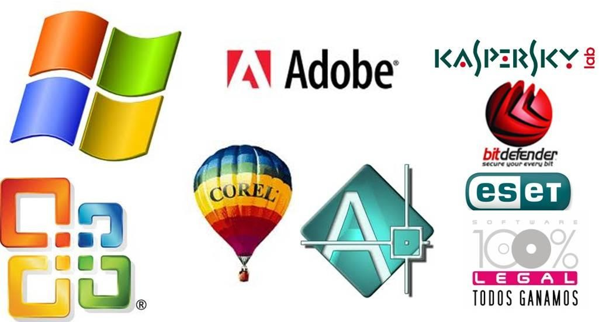

Hablemos de licencias de software
Juan Pablo Ruiz Guerra
jruizg96.11@gmail.com
Estudiante de Ingeniería en Ciencias y Sistemas - USAC
Palabras clave: Licencia, software, open source, software, privativo.
Para poder analizar correctamente los tipos de licencia, primero es necesario responder… ¿Qué es una la licencia de software? En términos muy simples, una licencia de software es un contrato entre la entidad propietaria del software y los consumidores, en el cual se establecen los derechos y obligaciones de ambas partes.
Habiendo definido la licencia de software se podrá hablar más a detalle de las características de cada una en específico.
La primera que se analizará es el tipo de licencia de código cerrado o software privativo debido a que es el más común. Su ideología se basa en proteger los derechos de autor y propiedad intelectual del fabricante. Este tipo de licencia establece las restricciones de uso, distribución, modificación y otros factores sobre el software, en la mayoría de casos prohibiendo los mismos. En casi todos los casos se debe pagar para tener el software. Por supuesto que se percibe un poco egoísta e interesado, cuantas personas están dispuestas a regalar su trabajo o permitir que utilicen sus productos para sus beneficios sin costo alguno. Unos ejemplos de este tipo serían los que normalmente se aceptan al utilizar los programas de Microsoft o cuando las empresas obtienen productos SAP. Las principales ventajas que ofrecen estos programas es la seguridad de que se ha invertido una gran cantidad de tiempo y recursos en desarrollar un software de calidad y que el soporte técnico para la herramienta será bastante bueno.

Autor: Contenidosdigitales/desconocido
Dirección electrónica de la imagen:http://contenidosdigitales.ulp.edu.ar/exe/sistemadeinfo/image001.png
{kind=link}
Por el contrario, el que más tiende a agradar en el área de informática debido a que da el control sobre el software. El tipo de licenciamiento open source o código abierto ofrece el código fuente de los programas que se están adquiriendo. Normalmente, se piensa que el adquirir software de este tipo es gratis y totalmente permisivo, pero esto no es así. Si bien es cierto que este tipo de licenciamiento permite acceder al código fuente, modificarlo y distribuirlo, esto no quiere decir que no pueda cobrar por ello y que no pueda poner ciertas restricciones. Es por esto que este tipo de licenciamiento se puede clasificar de la forma siguiente:
Licencias de código abierto permisivo: no pone restricciones sobre su uso, modificación o distribución. Un ejemplo de este tipo seria la licencia “Academic Free License”.
Licencias de código abierto con restricciones débiles: contienen una cláusula que obliga que las modificaciones que se realicen al software original se deban licenciar bajo los mismos términos y condiciones. Sin embargo, las copias derivadas de él sí pueden ser licenciados bajo otros términos y condiciones. Un ejemplo de este tipo seria la licencia "Mozilla Public License".
Licencias de código abierto con restricciones fuertes: contienen una cláusula que obliga que las modificaciones y obras derivadas que se realicen del software original se deban licenciar bajo los mismos términos y condiciones. Un ejemplo de este tipo seria la licencia “GNU General Public License”.
Las ventajas de las licencias de código abierto son que normalmente son gratuitas o de muy bajo costo, permite adaptar las herramientas a las necesidades del cliente y se pueden conseguir con mucha facilidad. Las desventajas son primordialmente el soporte, en este tipo de licenciamiento el soporte es dado por la comunidad, si hay una comunidad pequeña usando el software habrá poco soporte.
Por último, tenemos el tipo de licencia de dominio público o software sin licencia. Este tipo de software no pone restricción alguna. Eso quiere decir que permite su uso, copia, modificación y distribución con o sin fines de lucro.
Por supuesto que cada tipo de licenciamiento tiene diferentes variaciones, pero si se analiza un poco desde diferentes puntos de vista, para los usuarios es conveniente tener una herramienta que tenga soporte, actualizaciones, parches de seguridad, etc. Todo esto lo ofrece el tipo de licenciamiento de código cerrado, pero si existe un software de código abierto que cumpla con los requisitos y que tenga una comunidad lo suficientemente grande para brindar el soporte puede que sea más conveniente esta opción.
Para un desarrollador, existen herramientas de código abierto que, al modificarlo, pueden reducir el tiempo y el costo de hacer determinado producto, pero puede ser que si lo usemos lo tengamos que liberar bajo los mismos términos de licenciamiento, por lo que puede que esto no sea conveniente.
La mejor opción siempre dependerá del contexto en el que se encuentre. Lo mejor en todo momento será informarse de todas las maneras posibles, y decidir con base en modas o favoritismos, y claro leer los términos y condiciones que siempre se ignoran.
Conclusiones:
La elección de un tipo de licenciamiento es fundamental al momento de empezar un proyecto, es necesario considerar todos los factores que pueden afectar de alguna manera al proyecto.
El soporte que pueda tener cada licencia que se incluya en un proyecto puede llegar a impactar directamente en el éxito o fracaso del proyecto.
La licencia de código abierto no necesariamente debe ser gratuita.
La licencia de código abierto puede imponer restricciones en tus modificaciones y obras derivadas.
La mejor elección en el tipo de licencia siempre dependerá del contexto en que se encuentre.
Referencias:
- ¿Conoces los tipos de licencia de software? Aquí te desglosamos el tema. Ing. Victor Bazán Sanchez.